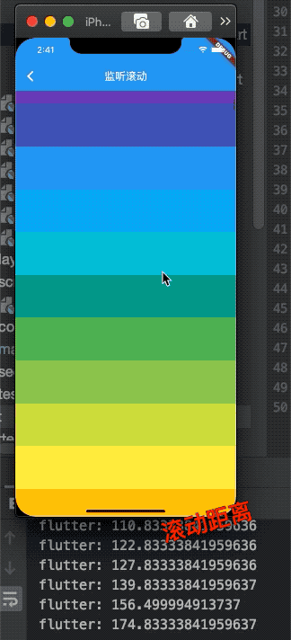

6.6 滚动及监听控制
本章讲解了多个滑动组件包括SingChildScrollview、ListView、GridView、CustomScrollView，他们都有一个属性controller,监听滚动控制器，我们以SingChildScrollview为例，讲解具体的用法。
6.6.1 ScrollController
构造函数很简单，
ScrollController({
double initialScrollOffset = 0.0, //初始滚动位置
this.keepScrollOffset = true,//是否保存滚动位置
...
})
|属性|使用方法|
|：-：|：-：|
|offset|滚动组件到当前位置|
|jumpTo(double offset)、animateTo(double offset|前者直接跳转，后者附带动画效果|
监听滚动
ScrollController的继承链是这样子的
ScrollController<ChangeNotifier<Listenable,所以可以监听。
Widget _body() {
return CupertinoScrollbar(
child: ListView.builder(
itemBuilder: _child,
controller: _controller,
),
);
}
Widget _child(ctx, int index) {
return Container(
height: 80,
color: Colors.primaries[index % Colors.primaries.length],
);
}
ScrollController _controller;
@override
void initState() {
_controller = new ScrollController()
..addListener(() {
print('${_controller.offset}');
});
super.initState();
}
效果是：

监听滚动长度和比例
Flutter Widget树中子Widget可以通过发送通知（Notification）与父(包括祖先)Widget通信。父级组件可以通过NotificationListener组件来监听自己关注的通知。
可滚动组件在滚动时会发送ScrollNotification类型的通知，ScrollBar正是通过监听滚动通知来实现的。通过NotificationListener监听滚动事件和通过ScrollController有两个主要的不同：
通过NotificationListener可以在从可滚动组件到widget树根之间任意位置都能监听。而ScrollController只能和具体的可滚动组件关联后才可以。
收到滚动事件后获得的信息不同；NotificationListener在收到滚动事件时，通知中会携带当前滚动位置和ViewPort的一些信息，而ScrollController只能获取当前滚动位置。
接受滚动时间参数类型是ScrollNotification,他包含属性metrics,该属性描述滚动的范围和大小
| 属性 | 含义 |
|---|---|
| maxScrollExtent | 滚动的最大距离 |
| pixels | 滚动的当前位置 |
| viewportDimension | 滚动的最大距离 |
| axisDirection | 滚动的方向 |
| outOfRange | 是否已超出范围，超出有效区域会触发 |
| atEdge | 现在在底部或者顶部 |
| extentBefore | 划出顶部的范围 |
| extentAfter | 划出底部的距离 |
更多属性见flutter API
下面我们看一个监听滑动百分比例子：
Widget _body() {
return Stack(
alignment: Alignment.center,
children: <Widget>[
CupertinoScrollbar(
child: NotificationListener<ScrollNotification>(
onNotification: (ScrollNotification no) {
var v = no.metrics.pixels / no.metrics.maxScrollExtent;
setState(() {
_value = v * 100;
});
return true;
},
child: ListView.builder(
itemBuilder: _child,
controller: _controller,
itemCount: 50,
),
),
),
CircleAvatar(
radius: 40,
child: Container(
// color: Colors.black45,
child: Text('${_value.toStringAsFixed(2)}%'),
),
)
],
);
}